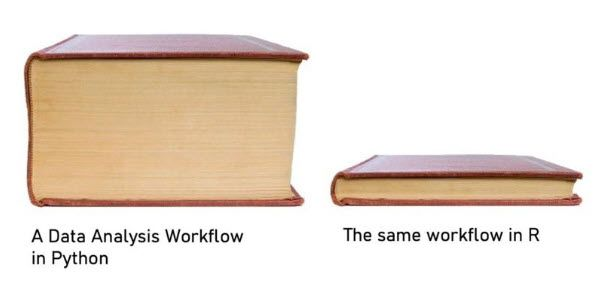
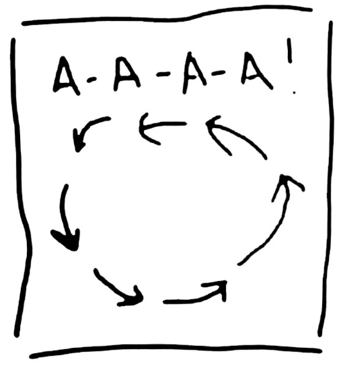
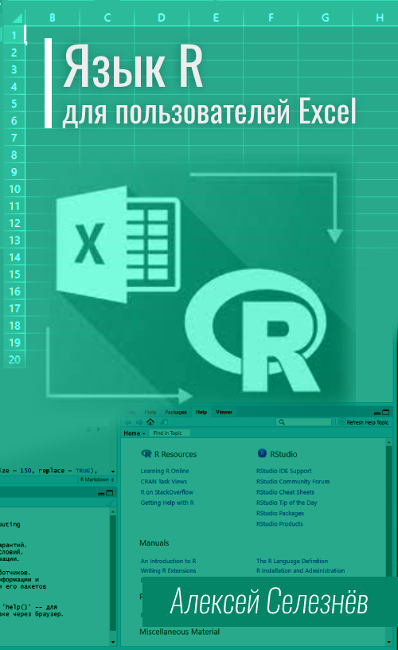
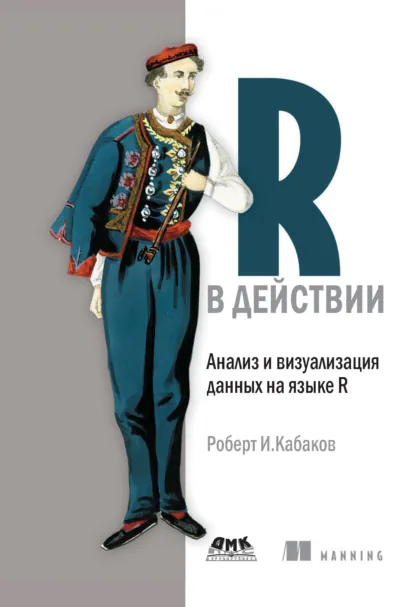
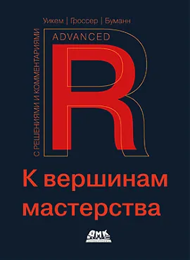

{kind=link}
{kind=link}
[1] "character"[1] "double"[1] "integer"[1] "double"
младший научный сотрудник
НИИ антимикробной химиотерапии
ФГБОУ ВО СГМУ Минздрава России
Если слышно/видно поставьте в чат плюс +
Исполнение:
Парадигма:
Типизация:
Назначение:
Исполнение:
Парадигма:
Типизация:
Назначение:


Язык R
Среда разработки RStudio
Среда разработки Positron

Posit Cloud
🗃️ RStudio IDE cheatsheet: https://rstudio.github.io/cheatsheets/html/rstudio-ide.html
Скрипт - текстовый файл, который содержит команды на языке R. Скрипт - файл с расширением *.R который содержит команды языка R.
Его уже можно запускать в командрой строке без установленной IDE.
Чтобы команды скрипта могли работать с внешними файлами, нужно задать рабочую папку.
Рабочая папка - та папка, в которой находятся файлы, с которыми работает R
Проект - может включать несколько файлов скриптов, имеет файл с расширением *.Rproj. Рабочей папкой в этом случае является папка проекта.
Удобнее всего работать с проектами.
Объект - Все, что вы сохраняете в R: наборы данных, переменные, список названий населенных пунктов, количество населения, а также выходные данные, такие как графики - это все объекты, которым присваивается имя и на которые можно ссылаться в последующих командах.
Функция - закодированная операция, которая принимает входные данные и выдает преобразованный результат.
Пакет - набор функций и объектов, которыми можно поделиться и использовать в своей работе.
Типы данных:
numeric, double - дробные числаinteger - целые числаfactor - категориальные данныеcharacter - текстlogic - логическиеPOSIXlt, date - датыСпециальные значения:
NA - соответствует состоянию Нет данных. Служит заглушкой пропущенных значений.NULL - отсутствие объектаNaN - не является числом. Когда результат вычислений неизвестен.Inf - бесконечностьДля присвоения значения используется символ стрелки влево AltAlt + --
✅ myvar, my_var, my.var
❌ my@var
✅ myvar1
❌ 1myvar
✅ patient.age
❌ `возраст пациента`
city и City - разные имена)[1] 3[1] 3.46[1] 4[1] -3[1] 3.5Нужны для проверки условий выполнения действий в процессе работы скрипта.
Их особенность, что они выдают только два возможных результата:
TRUE - условие выполняется, ИСТИНАFALSE - условие не выполняется, ЛОЖЬЧтобы составлять сложные условия, необходимо комбинировать несколько логических значений.
Используем только один оператор if
[1] "Покормить кота"[1] "Погладить кота"[1] "Погладить кота"
Используем if для успешной проверки, else - для неуспешной
[1] "слушаем лекцию"[1] "смотрим сериалы"
Можно комбинировать несколько if и else.
Можно использовать оператор switch.

Циклы применяются для того, чтобы повторить некоторое действие нужное количество раз.
В R использовать их не рекомендуется.
Векторизированные операции в R экономнее - как в плане более короткого и читаемого кода, так и в плане скорости.

Выполняет определенные действия заранее определенное количество раз.
Операторы управления циклами:
next - переводит на следующую итерацию циклаbreak - полностью прерывает выполнение циклаВыполняет операции до тех пор, пока условие истинно.
Важно изменять переменную, отвечающую за выполнение условия внутри цикла, иначе цикл будет выполняться бесконечно.
Выполняется бесконечно. Похож на while, но выполняется как минимум один раз.
Внутри цикла должна вызываться команда break, чтобы остановить выполнение.
Функция - фрагмент программного кода, к которому можно обратиться из другого места программы.
В большинстве случаев с функцией связывается идентификатор - имя функции.
В функцию можно передать какие-то данные - аргументы.
Функция возвращает какой-то результат.
Объекты создаваемые внутри функции существуют только во время выполнения внутри функции.
Можно менять порядок аргументов функции, если указать их имена вручную.
return.Пакеты – это собрания функций R, данных и скомпилированного программного кода в определенном формате. Они устанавливаются из единого хранилища пакетов CRAN.
# Список установленных пакетов
installed.packages()
# Установка пакета
install.packages("lubridate")
# Использование пакета
library(lubridate)
# Проверка установки пакета. # Если он отсутствует, пакет будет установлен и загружен
if (!require(lubridate)) {
install.packages("lubridate")
library(lubridate)
}# Посмотреть все доступные наборы
help(package='datasets')
?datasets
# Motor Trend Car Road Tests
mtcars
# Edgar Anderson's Iris Data
iris
# Monthly Deaths from Lung Diseases in the UK
mdeaths # males
fdeaths # females
ldeaths # both sexes
# Infertility after Spontaneous and Induced Abortion
infert
# Pharmacokinetics of Indomethacin
Indometh
# Smoking, Alcohol and (O)esophageal Cancer
esoph

[1] "Sepal.Length" "Sepal.Width" "Petal.Length" "Petal.Width" "Species" [1] "Mazda RX4" "Mazda RX4 Wag" "Datsun 710" "Hornet 4 Drive" "Hornet Sportabout"
[6] "Valiant" "Duster 360" "Merc 240D" "Merc 230" "Merc 280"
[11] "Merc 280C" "Merc 450SE" "Merc 450SL" "Merc 450SLC" "Cadillac Fleetwood"
[16] "Lincoln Continental" "Chrysler Imperial" "Fiat 128" "Honda Civic" "Toyota Corolla"
[21] "Toyota Corona" "Dodge Challenger" "AMC Javelin" "Camaro Z28" "Pontiac Firebird"
[26] "Fiat X1-9" "Porsche 914-2" "Lotus Europa" "Ford Pantera L" "Ferrari Dino"
[31] "Maserati Bora" "Volvo 142E" 'data.frame': 150 obs. of 5 variables:
$ Sepal.Length: num 5.1 4.9 4.7 4.6 5 5.4 4.6 5 4.4 4.9 ...
$ Sepal.Width : num 3.5 3 3.2 3.1 3.6 3.9 3.4 3.4 2.9 3.1 ...
$ Petal.Length: num 1.4 1.4 1.3 1.5 1.4 1.7 1.4 1.5 1.4 1.5 ...
$ Petal.Width : num 0.2 0.2 0.2 0.2 0.2 0.4 0.3 0.2 0.2 0.1 ...
$ Species : Factor w/ 3 levels "setosa","versicolor",..: 1 1 1 1 1 1 1 1 1 1 ... Sepal.Length Sepal.Width Petal.Length Petal.Width Species
1 5.1 3.5 1.4 0.2 setosa
2 4.9 3.0 1.4 0.2 setosa
3 4.7 3.2 1.3 0.2 setosa
4 4.6 3.1 1.5 0.2 setosa
5 5.0 3.6 1.4 0.2 setosa
6 5.4 3.9 1.7 0.4 setosa Sepal.Length Sepal.Width Petal.Length Petal.Width Species
Min. :4.300 Min. :2.000 Min. :1.000 Min. :0.100 setosa :50
1st Qu.:5.100 1st Qu.:2.800 1st Qu.:1.600 1st Qu.:0.300 versicolor:50
Median :5.800 Median :3.000 Median :4.350 Median :1.300 virginica :50
Mean :5.843 Mean :3.057 Mean :3.758 Mean :1.199
3rd Qu.:6.400 3rd Qu.:3.300 3rd Qu.:5.100 3rd Qu.:1.800
Max. :7.900 Max. :4.400 Max. :6.900 Max. :2.500 describe_vector <- function(x, digits = 2) {
# Проверка: вектор ли это и не пустой ли
if (!is.numeric(x)) return("Аргумент 'x' должен быть числовым вектором.")
if (length(x) == 0) return("Вектор 'x' пуст.")
N <- paste("N =", length(x))
AVG <- round(mean(x, na.rm = TRUE), digits)
SD <- round(sd(x, na.rm = TRUE), digits)
AVGSD <- paste("AVGSD:", paste0(AVG, " \u00B1 ", SD))
Me <- round(median(x, na.rm = TRUE), digits)
Q1 <- round(quantile(x, 0.25, na.rm = TRUE), digits)
Q3 <- round(quantile(x, 0.75, na.rm = TRUE), digits)
MeQ1Q3 <- paste0("MeQ1Q3:", Me, " (", Q1, "; ", Q3, ")")
Min <- paste("Min:", round(min(x, na.rm = TRUE), digits))
Max <- paste("Max:", round(max(x, na.rm = TRUE), digits))
# Формируем итоговую строку
result <- paste(N, AVGSD, MeQ1Q3, Min, Max, sep = ", ")
return(result)
}
describe_vector(iris$Sepal.Width)[1] "N = 150, AVGSD: 3.06 ± 0.44, MeQ1Q3:3 (2.8; 3.3), Min: 2, Max: 4.4"🗃️ R cheatsheet: https://github.com/rstudio/cheatsheets/raw/main/base-r.pdf

Анализ данных и статистика в R
https://pozdniakov.github.io/tidy_stats/

Справочник эпидемиолога R
https://www.epirhandbook.com/ru/index.ru.html

Язык R для пользователей Excel
https://selesnow.github.io/r4excel_users/

Роберт И. Кабаков. R в действии. Анализ и визуализация данных в программе R / пер. с англ. Полины А. Волковой. – М.: ДМК Пресс, 2014.
https://dmkpress.com/catalog/computer/statistics/yazyk-r/978-5-94074-912-8/

Дж. Д. Лонг и Пол Титор. R. Книга рецептов: Проверенные рецепты для статистики, анализа и визуализации данных / пер. с анг. Д. А. Беликова. – М.: ДМК Пресс, 2020 (Главы 1-3)
https://www.labirint.ru/books/735550/

Гроссер М., Буманн Х., Уикем Х. R. К вершинам мастерства. С решениями и комментариями / пер. с анг. Гинько А. Ю. – М.: ДМК Пресс, 2024
https://dmkpress.com/catalog/computer/statistics/yazyk-r/978-5-93700-247-1/
Канал Наука и данные
https://t.me/naukaidannye
Канал R4marketing
https://t.me/R4marketing

ChatGPT, Qwen, DeepSeek, …
🖥️ Презентация
https://vk.cc/cQOa2O
👩💻 Код проекта
https://vk.cc/cQOahx
💬 Группа курса в Telegram
t.me/+ZzzdU5ZvWuw4M2Ri
📧 Пишите на почту
dt.science@post.smolgmu.ru
Ссылка на презентацию: https://vk.cc/cQOa2O
{kind=link}
{kind=link}